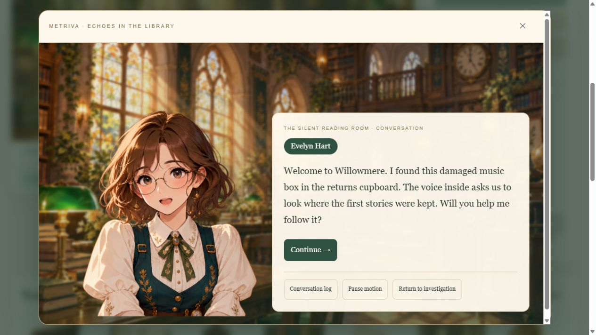
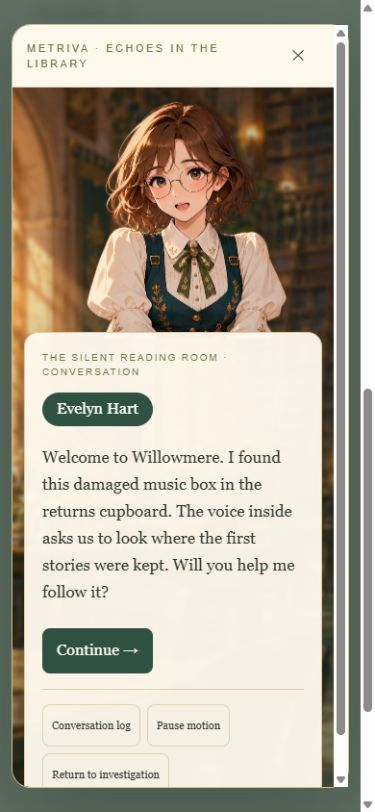
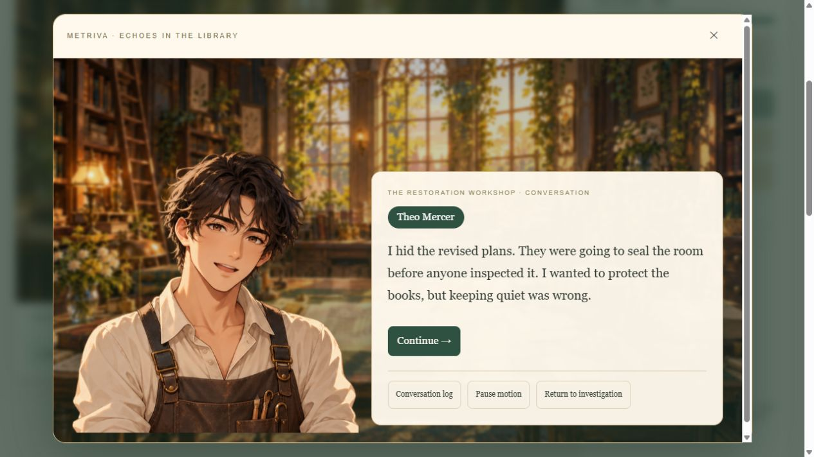
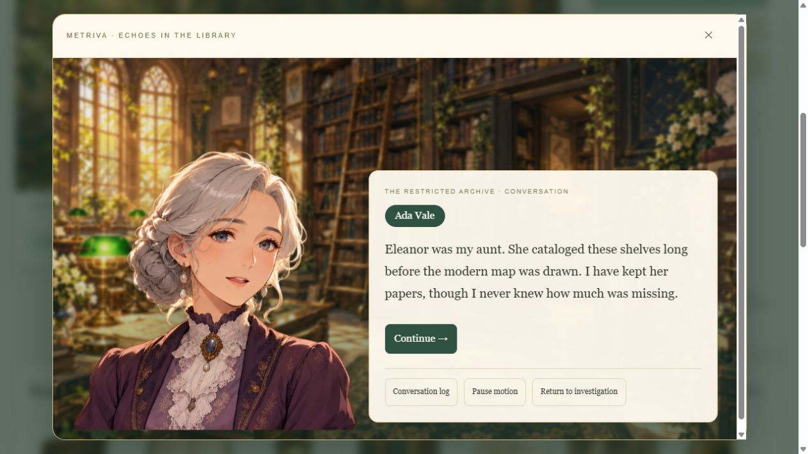
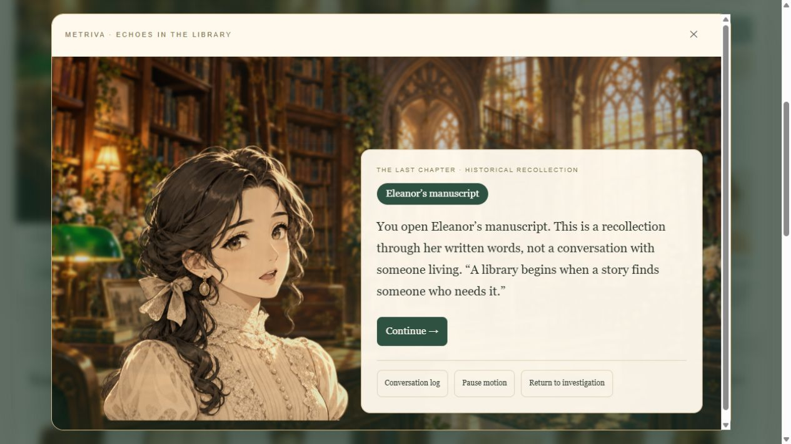
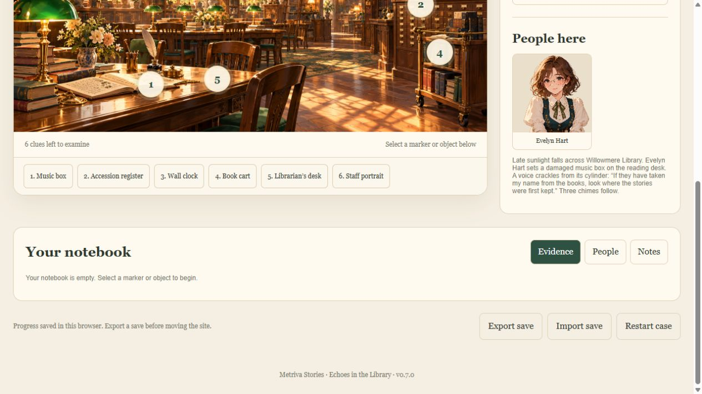

Echoes in the Library
Actual running game screenshots and animation recording.

01-evelyn-conversation.jpg
02-mobile-conversation.jpg
03-theo-workshop.jpg
04-ada-archive.jpg
05-eleanor-recollection.jpg
06-reading-room.jpgactual-animation.gif